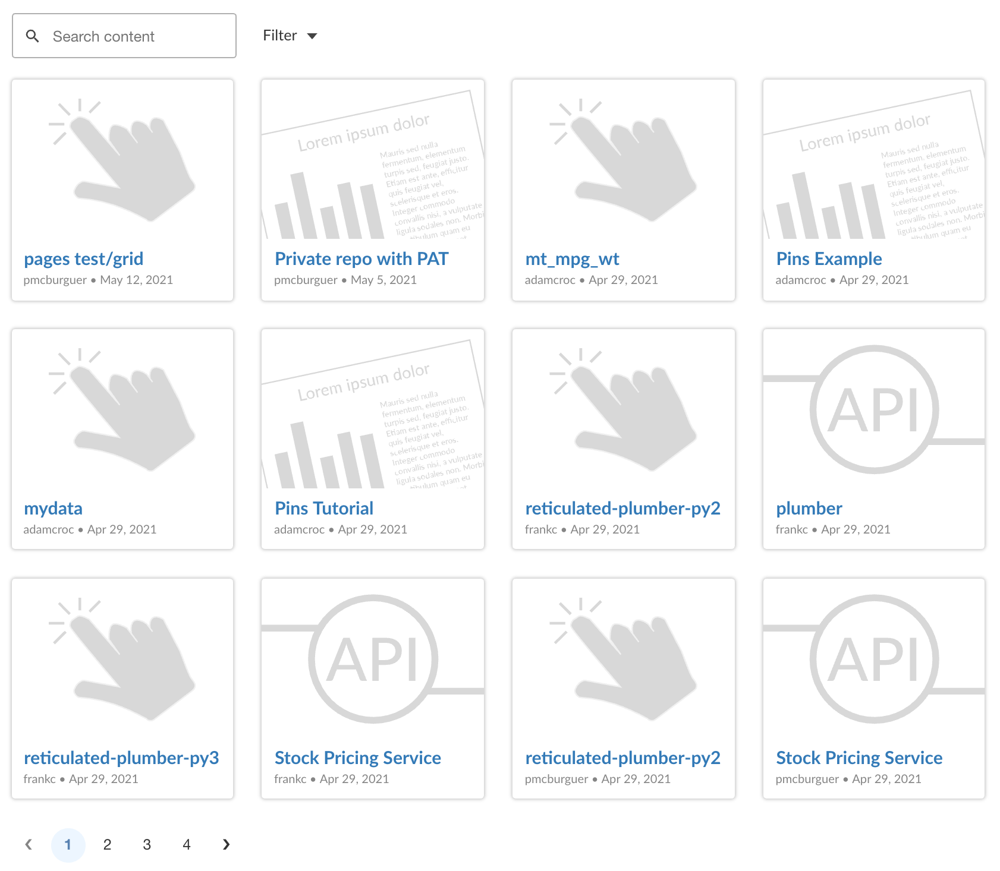
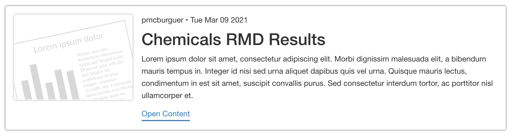

Overview
You can use the rscpages package to curate your content on RStudio Connect, helping to create organized groups of content within an RMarkdown document or Shiny app.
NOTE: This package is still in alpha and is not ready for any production usage. Things will change, things might break, etc
Installation
This package has not been released to CRAN yet and must be installed from GitHub:
# install.packages("remotes")
remotes::install_github("rstudio/rscpages")Usage
rscpages provides UI components (see htmlwidgets) to help publishers provide curated organization of content on RStudio Connect.
Connecting to RStudio Connect
You can specify the RStudio Connect server and your API key using the connect function. For instructions on creating an API key, see https://docs.rstudio.com/connect/user/api-keys/#api-keys-creating.
Although you can provide server and api_key to the connect(...) function directly for quickly getting started, it is recommended to use environment variables in production. The environment variables CONNECT_SERVER and CONNECT_API_KEY will be used automatically if they are present. In your development environment, these can be conveniently set in an .Renviron as outlined in this article. When deploying to RStudio Connect, these environment variables will be automatically provided - no steps necessary!
Fetching Content
The content method returns a data frame of the content available on the RStudio Connect server.
all_content <- client %>% content()Note About Permissions: If you are using the API key of an administrator, all content on the RStudio Connect server will be available; however, if you are using a publisher API key, only the content visible to that particular publisher will be available.
Data Dictionary for Content
-
id- Auto-incrementing identifier for each content item (legacy) -
guid- Unique identifier for each content item (preferred) -
app_mode- The type of the content item (examples:shiny,rmd-static,static,python-dash, etc.) -
content_category- Forstaticapp modes, the specific category of content (examples:site,plot,pin, etc.) -
name- The name of the content item as set at initial publishing -
title- The user-provided title of the content item -
description- The user-provided description of the content item -
url- The URL to the content item -
owner_guid- Unique identifier of the owner of the content item -
owner_username- Username of the owner of teh content item -
owner_first_name- First name of the owner of the content item -
owner_last_name- Last name of the owner of the content item -
tags- A data frame of the tags associated with the content item, with the following columns:id,name,parent_id,created_time,updated_time. -
created_time- The timestamp at which the content item was created -
updated_time- The timestamp at which the content item was last updated
Filtering Content
We provide helper functions to filter by both owners and tags.
by_tags(...)- Filters the data frame to only include content that has been tagged with the specified tag name(s). You can pass a single tag name or a list of tag names.by_tagis provided as an alias for readability when using a single tag.by_owners(...)- Filters the data frame to only include content with the specified owner(s) by username. You can pass a single username or a list of usernames.by_owneris provided as an alias for readability when using a single tag.
filtered_content <- client %>% content() %>% by_owner('brian') %>% by_tags(c('finance','marketing','sales'))You can also simply do filtering manually using dplyr, built-in R functions, or your favorite data frame package.
UI Components
Once you have fetched (and filtered, arranged, etc) the content, you can display the content using one or more of the presentation components: Table, Grid, and Card.
Table view component - rsctable
A rich table format is provided through the rsctable function. This renders a reactable table that includes sorting and pagination.
rsctable(all_content)
Grid view component - rscgrid
If you aren’t in the mood for a table to showcase your content, what about a grid view?
bscols(
rscsearch(all_content),
rscfilter(all_content)
)
rscgrid(all_content)
As you can see in the above example, the rscgrid component works just like rsctable but with a different approach on displaying the content. It uses the content images specified in Connect and, if no image is found, default images are used depending on the content type. Note that while on the IDE only default images are used.
Card component - rsccard
rsccard is a good option for those cases when you need to highlight specific content.
# This component looks within the content for:
# - title
# - url
# - owner_username
# - description
# - updated_time
rsccard(all_content[21,])
Search and Filter components - rscsearch and rscfilter
What about searching and filtering content? Well, that’s where rscsearch and rscfilter come in. In the next example, rscsearch and rscfilter are used within bscols(), a provided function that helps you to easily arrange this components in columns.
bscols(
rscsearch(all_content),
rscfilter(all_content)
)
rsctable(all_content)
The rscfilter component allows to filter content by owner, content type and tag(s)

It is important to note that in order for rsctable, rscsearch and rscfilter components to work together, the exact same collection of data needs to be passed along, in this case the all_content data frame.
Example Page
Here is an RMarkdown document that includes John’s most recent daily finance reports. We are using the by_owner and by_tags filtering to only include content published by “john” that has been tagged with finance
---
title: "John's Finance Reports"
output: html_document
---
```{r include=FALSE}
library(rscpages)
library(magrittr)
library(dplyr)
client <- connect(
server = Sys.getenv("CONNECT_SERVER"),
api_key = Sys.getenv("CONNECT_API_KEY")
)
reports <- client %>%
content() %>%
by_owner('john') %>%
by_tag('finance') %>%
arrange(desc(created_time)) %>%
top_n(10)
```
The most recent finance reports for Acme, Inc. Please direct any questions to [john@example.com](mailto:john@example.com)
```{r echo=FALSE, message=FALSE}
bscols(
rscsearch(reports),
rscfilter(reports)
)
rsctable(reports)
```